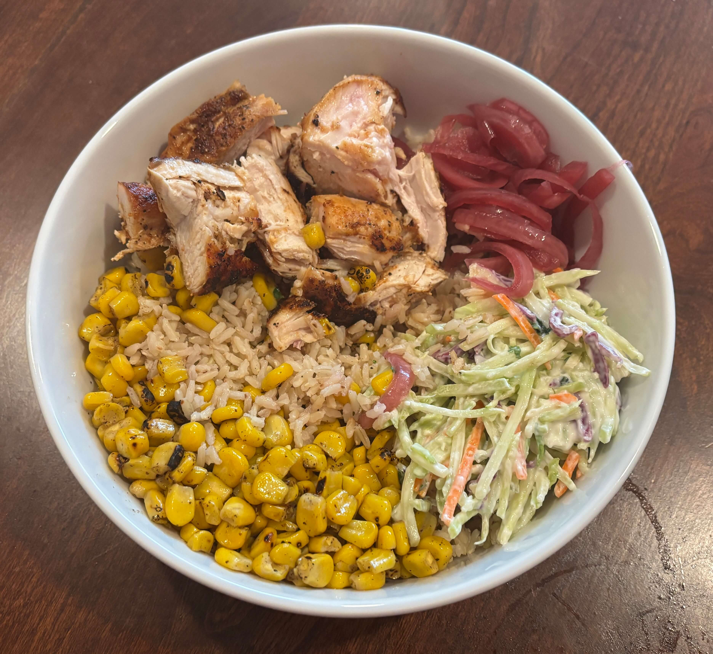

Home
Chicken BBQ Bowl

4 servings
25 min
Ingredients
- 2 whole Brown Sugar BBQ Marinated Chicken Cutlets
- salt & pepper, to taste
- extra virgin olive oil
- 10 oz jasmine white rice
- 1/2 cup Fire Roasted Sweet Corn
- 2 cups broccoli slaw
- 1 cup shredded colby jack cheese
- 1/2 cup pickled red onions, drained
- 2 tsp Sweet & Smoky BBQ Seasoning Shak'r
- 1 cup bbq sauce
Steps
- Preheat grill on HIGH 10 min. Season chicken with salt and pepper; drizzle both sides lightly with oil.
- Add chicken to grill; close lid. Reduce heat to MED-HIGH. Grill 13-15 min; turn over every 2 min. Remove chicken from grill (155 degrees).
- Let rest 2 min (165 degrees). Transfer chicken to cutting board. Dice chicken into 1-inch cubes. Set aside.
- Cook rice and corn per package directions. Set aside.
- Divide rice into 4 bowls. Top each evenly with slaw. Place 2 Tbsp corn and 2 Tbsp pickled red onions around perimeter of each bowl. Divide chicken evenly on top of slaw. Season chicken with 1/2 tsp BBQ seasoning each. Top each evenly with cheese and sauce.